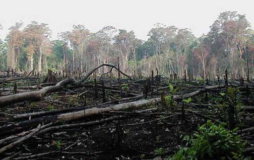

¿Qué es la Destrucción de hábitats?
Desde un punto de vista humano, un hábitat es donde vives, estudias o te diviertes. Tu hábitat puede ser alterado y te podrás adaptar con facilidad. La mayoría de las personas viven en lugares diferentes o asisten a una cierta cantidad de escuelas diferentes a lo largo de sus vidas. Pero una planta o animal puede no ser capaz de adaptarse a un cambio de hábitat. Un hábitat es el hogar o ambiente natural de un organismo. Los seres humanos suelen destruir los hábitats de otros organismos. La destrucción de hábitats puede causar la extinción de especies. La extinción es la desaparición completa de una especie. Cuando una especie se extingue, nunca más se puede recuperar. Algunas formas en las que los seres humanos causan la destrucción de un hábitat es al desocupar tierra o introducir especies no nativas de plantas y animales.
Esta fotografía, tomada en el sur de México, muestra la tierra siendo despejada para la agricultura. El bosque ha sido talado y quemado para hacer espacio para una granja. En el proceso, los hogares de muchas plantas y animales fueron destruidos. Este es un ejemplo de la destrucción de un hábitat.
Pérdida de Tierra:
Desocupar tierra para la agricultura y el desarrollo es una de las principales causas de la destrucción de hábitats. Durante los últimos 100 años, la cantidad total de tierra usada para la agricultura casi se ha duplicado. La tierra usada para el ganado se ha más que duplicado. La agricultura por si sola le ha costado a los Estados Unidos la mitad de pantanos (véase Figura siguiente ) y casi todas sus praderas de hierba alta. Los ecosistemas nativos de praderas, con sus suelos gruesos y fértiles, hierbas con raíces firmes, flores de diversos colores, perros de la pradera en sus madrigueras y manadas de búfalos u otros animales, prácticamente han desaparecido.
Agricultura de Tala y Quema:
Otros hábitats que están siendo destruidos con rapidez son los bosques, especialmente las selvas tropicales. La principal causa de deforestación hoy en día es la agricultura de tala y quema (mostrada en la imagen del principio). Esto quiere decir que cuando las personas quieren convertir un bosque en una granja, talan todos los árboles y queman los restos de bosque. Esta técnica es usada por más de 200 millones de personas en los bosques tropicales a lo largo del mundo.
Como consecuencia de la agricultura de tala y quema, los nutrientes del suelo se pierden con rapidez. Esto suele resultar en que las personas abandones la tierra dentro de uno años. Luego la superficie del suelo se erosiona y puede ocurrir desertificación. La desertificación convierte un bosque en un desierto, donde el crecimiento de plantas es difícil. La mitad de los bosques tropicales maduros de la Tierra están extintos. Según la tasa actual de deforestación, todos los bosques tropicales dejarán de existir para el año 2090.
Especies No Nativas:
Una de las principales causas de extinción es la introducción de especies exóticas a un ambiente. Estas especies nuevas y exóticas también pueden ser llamadas especies invasoras o especies no nativas . Estas especies no nativas, al ser nuevas en el área, pueden no tener depredadores en el hábitat nuevo, lo que permite que la población de adapte y crezca con facilidad. Las especies invasoras superar a las especies nativas y acaparan los recursos. En algunos casos las especies invasoras son tan exitosas en sobrevivir en cierto hábitat que la especie nativa se extingue (véase Figura siguiente ).
Recientemente, los buques de carga han transportado mejillones cebra, pulgas de agua espinosas y acerinas (un pez de agua dulce) a los Grandes Lagos (véase Figura siguiente ). Estas especies invasoras son mejores para cazar alimento. Han causado la extinción de algunas especies nativas.
Las especies invasoras pueden interrumpir las cadenas alimenticias, ingresar enfermedades, depredar a la especie nativa directamente y superar a la especie nativa por recursos limitados, como el alimento. Todos estos efectos pueden causar la extinción de una especie nativa.
Otras Causas:
Otras causas de la destrucción de hábitats incluye el mal control de incendios, la sobrepesca, la minería (véase Figura siguiente ), la contaminación y las tormentas. Todos estos factores pueden causar cambios irreversibles a un hábitat y ecosistema.
Ejemplos de Destrucción de Hábitats:
Un hábitat que se destruye con rapidez es el humedal . Para el 1980, cerca del 80% de todos los humedales en Estados Unidos fueron destruidos. En Europa, muchas especies de humedales se han extinto. Por ejemplo, en Escocia se han perdido muchos pantanos a causa del desarrollo humano.
Otro ejemplo de pérdida de especies por destrucción de hábitats ocurrió en el altiplano central de Madagascar. Del 1970 al 2000, la agricultura de tala y quema destruyó cerca del 10% del total de plantas nativas del país. La zona se convirtió en tierra infértil. El suelo erosionado ingreso a los canales. También se destruyó gran parte de los ecosistemas de varios ríos grandes. Varias especies de peces casi están extintas. Además, algunas formaciones de arrecifes de coral en el Océano Índico están completamente perdidas.